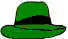
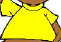
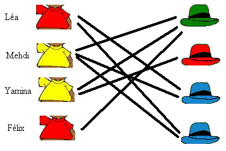

Tous les Castors ont un chapeau, mais ils ont mélangé leurs chapeaux, et aucun ne porte le bon.
Qui devrait porter le chapeau vert ?
On peut représenter les possibilités dans une table à double entrée :
|  | ||||||
| Léa | NON (règle 1) | NON (règle 2) | ||||
| Mehdi |  | NON (règle 1) | ||||
| Yamina | NON (règle 1) | NON (règle 1) | ||||
| Félix | NON (règle 2) | NON (règle 1) | NON (règle 1) |
Il ne reste qu'une possibilité pour Félix : le chapeau vert. La solution est donc Félix
Résoudre cet exercice est avant tout une question de logique, et on fait très souvent appel à la logique en informatique. En fait, on peut représenter cet exercice sous une forme plus habituelle pour un informaticien : un graphe, c'est à dire un ensemble de noeuds (ici les t-shirts et les chapeaux) reliés par des arcs. Chaque arc (trait noir sur l'illustration ci-dessous) représente une possibilité d'association entre un t-shirt et un chapeau qui n'est pas interdite directement par l'une des deux règles. Le graphe qu'on obtient est un graphe particulier car il contient deux types de noeuds, et un arc relie toujours un noeud d'un type à un noeud d'un autre type (ici, un noeud "t-shirt" à un noeud "chapeau"). C'est ce que les informaticiens appellent un graphe biparti.

Si les t-shirts, chapeaux et couleurs avaient été beaucoup plus nombreux, une simple déduction logique n'aurait pas suffi à trouver la solution. Il aurait fallu appliquer un algorithme bien connu des informaticiens : un algorithme de couplage maximal.